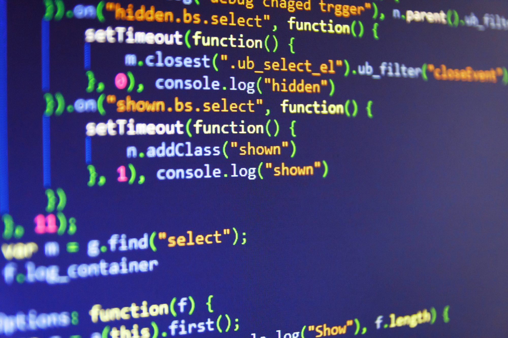

Picture of Myself


huhu
About Myself
Hello and Assalamualaikum, my name is Muhammad Aiman Adli Bin Kahar. I am a Computer Science student. I started my study at UiTM Kedah, Diploma in Computer Science and Mathematics. After graduated, I continue my study at UiTM Shah Alam, Bachelor of Computer Science (Hons.) Netcentric Computing. Currently, I am a Part 3 student and still studying. The purpose of this blog is I want to talk about myself as requested by my ITT501 lecturer Profesor Madya Dr Nor Shahniza Kamal Bashah.
My Opinion on Computer Science

Computer Science is one of the course that is really going up these days since technology is getting better day by day. With how technology grows, I think study in Computer Science will never be the waste of time. In fact, it will be a good investment for your future. So far, Computer Science is actually kinda fun to learn, but it need a passion and real hardwork in order to success in this course. I hope, after I graduate, I get a job that I want one day.
My Passion/Hobby/Interest
- Passion
- My passion is to be successful in this Computer Science course.
- I need to achieve my goals which is to be a successful Computer programmer one day.
- Hobby
- I love to play games at my free time, more to mobile games. Such as PUBG Mobile and Mobile Legends.
- Sometimes, I enjoy cycling with my friends. Depends on our mood for cycling huhu.
- Fishing also is my new hobby, since I have nothing to do due to MCO.
- Interest
- My interest is I love listening to music. Listening music helps reduce my stress.
- Also, I have interest in pets such as cat. Cat is my favourite one pet.


My Opinion on latest Israel-Palestine Issues (6 May 2021)
What is cyber attacks?
Cyber attacks is an assault launched by cybercriminals using one or more computers against a single
or multiple computers or networks. A cyber attack can maliciously disable computers, steal data, or
use a breached computer as a launch point for other attacks.
The Israel-Palestine issues is started since a long time ago. But this latest attacks, Israel really cross
the line. Malaysia is a country that supports Palestine, and it triggers the Malaysian people with the
attacks on Palestine. This time, it really hits hard for the Palestinian people. Malaysian people can't just
sit down and relax, we stand with Palestine. Indonesia is also stand with Palestine. So what did Malaysia and
Indonesia do based on the attack on Israel?
Malaysia and Indonesia form a hacking team which is AnonGhost x DragonForce Malaysia x All Hacking Team
Malaysia to fight against Israel by hacking their database.
Malaysia collab with Indonesia hacking Israel database
Palestine map from 1947 to present

Public CCTV hacks done by DragonForce Malaysia
Malaysia cyberbullying Israel
#MalaysiaStandWithPalestine #AlwaysAndForever
Malaysia flag waved at Palestine
Malaysia Stand With Palestine. Always and Forever <3